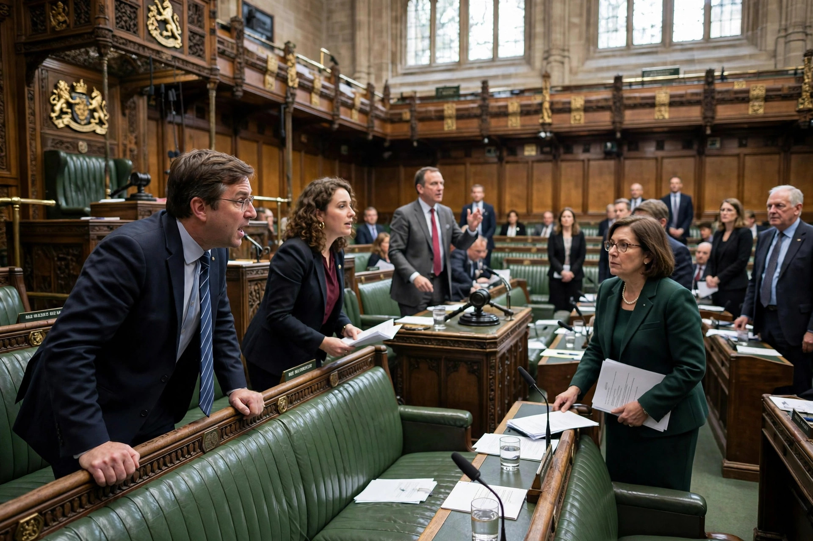

Parliamentary procedure, also called parliamentary law, parliamentary practice, legislative procedure, or rules of order, is the accepted rules, ethics, and customs governing meetings of an assembly or organisation. Its purpose is to allow assemblies to arrive at the sense or the will of the majority in an orderly and fair manner while respecting the rights of the minority, of individual members, and of absentees.

Members rising to speak in a parliamentary chamber during debate.
The term derives from the French parler ("to speak"), and its rules developed from the practice of the Parliament of England over centuries, later codified in works such as Erskine May's Parliamentary Practice (1844), the standard authority for Westminster-style legislatures. In the United States, Thomas Jefferson prepared a Manual of Parliamentary Practice (1801) for the Senate; Henry Martyn Robert's Robert's Rules of Order (1876) generalised parliamentary procedure for ordinary societies, clubs, and boards, and remains the most widely used manual in American voluntary organisations.
Core concepts include the motion (a formal proposal for action), the requirement of a second, debate under the chair's recognition, amendment, and voting — by voice, division, or ballot. Procedural motions handle the conduct of business itself: to adjourn, recess, table, refer to committee, limit debate (the previous question or cloture), or suspend the rules. A quorum — the minimum number of members who must be present — is required for valid decisions. Legislatures adapt these principles through standing orders, committee systems, and party discipline, as in the U.S. House under its Speaker.
May, T.E., Parliamentary Practice; Robert, H.M., Robert's Rules of Order Newly Revised.